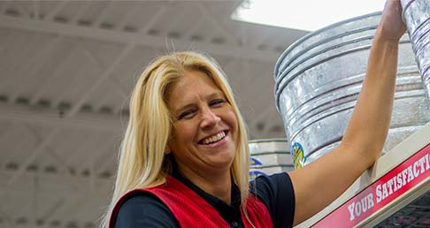

Community

Our Values Out Here
Out here, we believe actions speak louder than words. So it's no surprise we'd rather be helping out with a farm or ranch chore, than talking about it. We know that, to our customers, they're more than chores. They're choices about where and how they live. That's why we've built more than a company. We've created a culture based on the life and land Out Here.
Our rural lifestyle is a celebration of independence. Self-reliance is a source of great pride, but the “do it yourself” attitude doesn’t mean you have to do it alone. The spirit of neighbor helping neighbor, exemplified by traditional barn raisings, is the foundation of life Out Here. This commitment to each other, to “being there” for our neighbors and friends, is what sustains us through good times and bad.
We’re committed to doing whatever it takes to see that these values endure.
Our Neighbors
Our community values have earned the trust of the folks we serve. They’ve also earned us a reputation for service that goes “The Country Mile.” But service means more than helping customers save time and money. It means serving our communities and supporting the programs that strengthen them. We're not just protecting a way of life for ourselves; we're ensuring it’s an option for our children. They deserve the same choices, the same satisfaction of getting up early and getting a job done.
Local Community Outreach
On the local level, our stores regularly host community events ranging from Pet Adoptions to Animal Swaps to Tractor Shows. We work with several community partners including but not limited to local animal shelters, 4-H Clubs, FFA Chapters, and veterans groups to bring our local communities together for education and lots of fun. We also support many County and State Fairs across the country with various sponsorships.